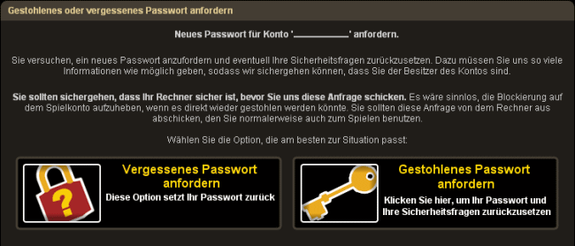
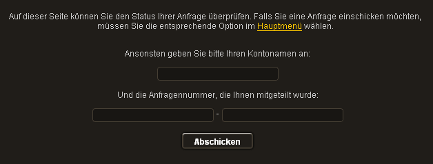

")
1. Ich habe mein Passwort verloren/vergessen. Was soll ich tun?
Wenn Sie sich v�llig sicher sind, dass Ihr Computer sicher und virenfrei ist, dann folgen Sie dieser Anleitung:
Falls wir Ihr Spielkonto nicht blockiert haben, klicken Sie hier, um Ihr Passwort anzufordern.
Sie m�ssen Ihren Benutzernamen angeben. Nachdem Sie sich einloggen, m�ssen Sie w�hlen, ob Sie das Passwort vergessen haben oder ob es gestohlen wurde. Bitte w�hlen Sie 'Vergessen'.
Bitte folgen Sie den Anweisungen am Bildschirm und geben Sie uns so viele Informationen wie m�glich.
Wenn Sie Ihre Kontoinformationen vergessen haben, sollten Sie uns in jeder Kategorie die fr�hesten Daten senden. Nur so k�nnen wir feststellen, ob Sie der rechtm��ige Eigent�mer sind und Ihnen wieder Zugang zu Ihrem Konto gew�hren.
Wir empfehlen Ihnen, diesen Abschnitt zu lesen, um herauszufinden, welche Passw�rter sicher sind und welche Sie lieber nicht verwenden sollten.
Am Ende des Vorgangs bekommen Sie eine Vorgangsnummer, mit der Sie den Status Ihrer Anfrage �berpr�fen k�nnen. Bitte schreiben Sie sich diese auf, denn ohne diese Nummer haben Sie keinen Zugriff auf unsere Antwort.
Wenn Sie die Antwort erhalten, dass wir mehr Informationen von Ihnen ben�tigen, sollten Sie noch einmal eine Passwort-Anfrage abschicken und in allen Kategorien die fr�hesten Informationen einf�gen, an die Sie sich erinnern k�nnen.
Bitte beachten Sie, dass Ihr Passwort nur so sicher ist wie Ihr Computer, und nur so geheim wie Sie es halten!

2. Jemand hat mein Passwort oder meine Sicherheitsfragen ver�ndert. Was soll ich tun?
In diesem Fall sollten Sie als Erstes daf�r sorgen, dass Ihr Computer sicher und virenfrei ist und niemand Ihr Passwort direkt von Ihrer Maschine auslesen kann. Lesen Sie sich bitte die Abschnitte 7 und 8 im Kapitel Sicherheitshinweise durch.
Wenn Sie sich v�llig sicher sind, dass Ihr Computer sicher und virenfrei ist, dann folgen Sie dieser Anleitung:
Falls wir vermuten, dass Ihr Passwort gestohlen wurde, wir Ihr Spielkonto blockiert und niemand kann darauf zugreifen. Um die Blockierung aufzuheben, klicken Sie bitte hier.
Falls wir Ihr Spielkonto nicht blockiert haben, klicken Sie hier, um Ihr Passwort anzufordern.
Sie m�ssen Ihren Benutzernamen angeben. Nachdem Sie sich einloggen, m�ssen Sie w�hlen, ob Sie das Passwort vergessen haben oder ob es gestohlen wurde. Bitte w�hlen Sie 'Gestohlen'.
Bitte folgen Sie den Anweisungen am Bildschirm und geben Sie uns so viele Informationen wie m�glich.
Wenn Sie Ihre Kontoinformationen vergessen haben, sollten Sie uns in jeder Kategorie die fr�hesten Daten senden. Nur so k�nnen wir feststellen, ob Sie der rechtm��ige Eigent�mer sind und Ihnen wieder Zugang zu Ihrem Konto gew�hren.
Wir empfehlen Ihnen, diesen Abschnitt zu lesen, um herauszufinden, welche Passw�rter sicher sind und welche Sie lieber nicht verwenden sollten.
Am Ende des Vorgangs bekommen Sie eine Vorgangsnummer, mit der Sie den Status Ihrer Anfrage �berpr�fen k�nnen. Bitte schreiben Sie sich diese auf, denn ohne diese Nummer haben Sie keinen Zugriff auf unsere Antwort.
Wenn Sie die Antwort erhalten, dass wir mehr Informationen von Ihnen ben�tigen, sollten Sie noch einmal eine Passwort-Anfrage abschicken und in allen Kategorien die fr�hesten Informationen einf�gen, an die Sie sich erinnern k�nnen.
Bitte beachten Sie, dass Ihr Passwort nur so sicher ist wie Ihr Computer, und nur so geheim wie Sie es halten!
3. Jemand anderes kennt mein Passwort. Was soll ich tun?
In diesem Fall sollten Sie als Erstes daf�r sorgen, dass Ihr Computer sicher und virenfrei ist und niemand Ihr Passwort direkt von Ihrer Maschine auslesen kann. Lesen Sie sich bitte die Abschnitte 7 und 8 im Kapitel Sicherheitshinweise durch.
Wenn Sie sich v�llig sicher sind, dass Ihr Computer sicher und virenfrei ist, dann folgen Sie dieser Anleitung:
Falls wir vermuten, dass Ihr Passwort gestohlen wurde, wir Ihr Spielkonto blockiert und niemand kann darauf zugreifen. Um die Blockierung aufzuheben, klicken Sie bitte hier.
Falls wir Ihr Spielkonto nicht blockiert haben, klicken Sie hier, um Ihr Passwort anzufordern.
Sie m�ssen Ihren Benutzernamen angeben. Nachdem Sie sich einloggen, m�ssen Sie w�hlen, ob Sie das Passwort vergessen haben oder ob es gestohlen wurde. Bitte w�hlen Sie 'Gestohlen'.
Bitte folgen Sie den Anweisungen am Bildschirm und geben Sie uns so viele Informationen wie m�glich.
Wenn Sie Ihre Kontoinformationen vergessen haben, sollten Sie uns in jeder Kategorie die fr�hesten Daten senden. Nur so k�nnen wir feststellen, ob Sie der rechtm��ige Eigent�mer sind, und Ihnen wieder Zugang zu Ihrem Konto gew�hren.
Wir empfehlen Ihnen, diesen Abschnitt zu lesen, um herauszufinden, welche Passw�rter sicher sind und welche Sie lieber nicht verwenden sollten.
Am Ende des Vorgangs bekommen Sie eine Vorgangsnummer, mit der Sie den Status Ihrer Anfrage �berpr�fen k�nnen. Bitte schreiben Sie sich diese auf, denn ohne diese Nummer haben Sie keinen Zugriff auf unsere Antwort.
Wenn Sie die Antwort erhalten, dass wir mehr Informationen von Ihnen ben�tigen, sollten Sie noch einmal eine Passwort-Anfrage abschicken und in allen Kategorien die fr�hesten Informationen einf�gen, an die Sie sich erinnern k�nnen.
Bitte beachten Sie, dass Ihr Passwort nur so sicher ist wie Ihr Computer, und nur so geheim wie Sie es halten!
4. Wie benutzt man das System f�r die Passwort-Wiederherstellung?
Man greift auf jedes Konto mit einem Benutzernamen und einem vom Spieler gew�hlten Passwort zu. Wir legen unseren Spielern nahe, sich ein Passwort auszusuchen, das sie sich leicht merken k�nnen, das jedoch gleichzeitig f�r andere schwierig zu erraten ist. Wir raten unseren Spielern, sich ihr Passwort auf einem Blatt Papier aufzuschreiben und an einem sicheren Ort aufzubewahren, damit sie es nicht vergessen. Au�erdem weisen wir Sie darauf hin, dass Sie Ihr Passwort niemandem verraten d�rfen, nicht einmal Freunden oder Verwandten.
Wenn ein Spieler aus irgendwelchen Gr�nden sein Passwort preisgibt, besteht die Gefahr, dass andere Leute es benutzen. In der Folge kann es zu Problemen beim Einloggen kommen, weil jemand, der das Passwort wusste, es ge�ndert hat. Sollte Ihnen so etwas passieren oder wenn Sie sich einfach nicht mehr an Ihr Passwort erinnern k�nnen, k�nnen Sie ein Formular ausf�llen, um sich wieder Zugriff auf Ihr Konto zu verschaffen. Dieses Formular finden Sie hier.

Es ist sehr wichtig, dass Sie die richtige Art Anfrage ausw�hlen, weil das die Wahrscheinlichkeit steigert, dass wir Ihnen bei Ihrem Problem helfen k�nnen.
Falls eine E-Mail-Adresse mit Ihrem Spielkonto verkn�pft wurde, k�nnen Sie diese hier angeben. Sobald Ihre Angabe von uns best�tigt wurde, schicken wir Ihnen einen Sicherheitscode. Kopieren Sie den Code aus der E-Mail in das entsprechende Eingabefeld im Formular zur Kontowiederherstellung. Falls keine E-Mail mit Ihrem Konto verkn�pft wurde oder Sie sie vergessen haben, dann lassen Sie das Eingabefeld frei und fahren Sie mit dem Wiederherstellungsvorgang fort.
Dann erscheint das Formular zur Kontowiederherstellungs-Anfrage, das ausgef�llt werden muss. Eventuell passen nicht alle Fragen zu Ihrem Konto, aber alle relevanten sollten richtig ausgef�llt werden. Je sachbezogener die Informationen sind, die wir erhalten, desto besser stehen die Chancen, dass wir den wahren Eigent�mer des Kontos ermitteln k�nnen. Die Informationen, die wir brauchen, sind:
- Ihre Sicherheitsfragen und -antworten
- Vorherige Passw�rter
Es gibt auch ein Feld, in dem Sie zus�tzliche Informationen eingeben k�nnen. Normalerweise finden Sie Ihre Transaktionsnummer und andere wichtige Abrechnungsinformationen in den Belegen, die Sie f�r Ihre Zahlung bekommen. Daher ist es sehr wichtig, dass Sie diese Unterlagen aufheben und sie nicht verlieren oder verlegen.
Wenn Sie Ihre Kontoinformationen vergessen haben, sollten Sie uns in jeder Kategorie die fr�hesten Daten senden. Nur so k�nnen wir feststellen, ob Sie der rechtm��ige Eigent�mer sind und Ihnen wieder Zugang zu Ihrem Konto und ein neues Passwort gew�hren.
Versuchen Sie uns so viele Informationen zukommen zu lassen, wie m�glich. So steigern Sie die Wahrscheinlichkeit, dass Ihre Anfrage Erfolg hat. Des Weiteren m�ssen Sie auch ein neues Passwort angeben. Lesen Sie sich vorher dieses Kapitel durch, damit Sie wissen, was ein sicheres und geeignetes Passwort ausmacht.
Status der Anfrage
Spieler erhalten dann eine einmalige Vorgangsnummer, mit der sie den Status ihrer Passwort-Anfrage verfolgen k�nnen. Dazu klicken Sie hier.
Man gelangt dann zu einer Seite, auf der man seine Vorgangsnummer eingeben muss:

Nachdem Sie die Vorgangsnummer und Ihren Benutzernamen eingegeben haben, k�nnen Sie sehen, in welchem Stadium sich Ihre Passwort-Anfrage befindet. Bitte beachten Sie, dass einige Passwort-Anfragen l�ngere Bearbeitungszeiten haben k�nnen als andere.